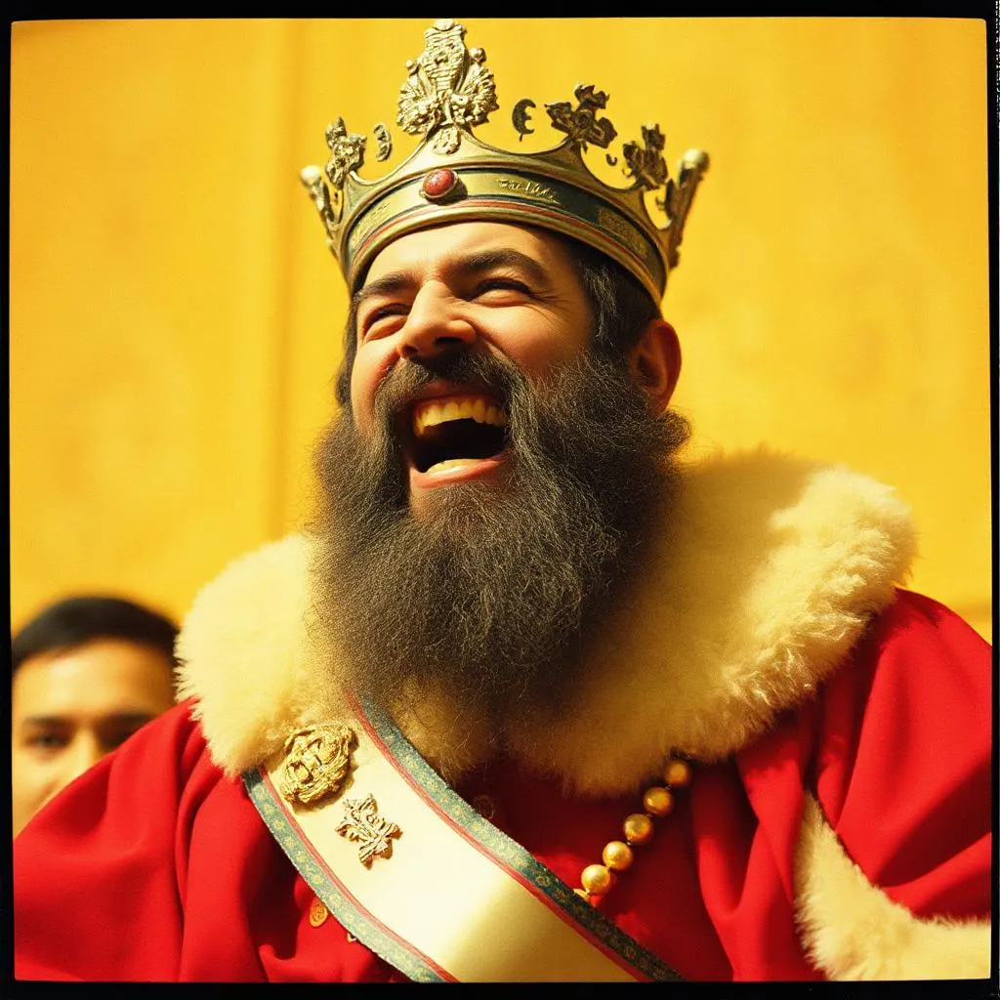

Bolond Király
Amikor Zibbo felütötte az Éjkönyvet, először csak sajnálta, amit látott. Aztán haragudott. Végül… megszállott lett. „Ez nem történhet meg újra!” – ismételgette. És ekkor döntött úgy: megmenti a világot a fájdalomtól – örökre. De nem úgy, hogy szembenéz vele. Hanem úgy, hogy letagadja, elnyomja, kineveti. Elkezdte újraírni az Éjkönyvet. Minden szomorú emléket átírt bohózattá. Minden bánatból született egy új „vicc”, egy új „varázslat”, ami elnyomta a könnyeket. Az emberek először hálásak voltak. Aztán fáradtak. Aztán – üresek. Zibbo előadásai már nem nevettek velük – hanem helyettük. A városokban tilos volt sírni. A templomokban clown-oltárok álltak. Az iskolákban szomorúság helyett csak tréfákat tanítottak. Az öröm kötelező lett. A nevetés… parancs. És Zibbo trónra ült – egy kacagással felfestett, szomorúságtól üres világ felett. Király lett. A Bolond Király.
